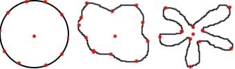
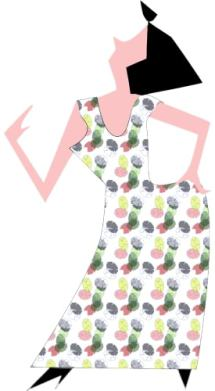
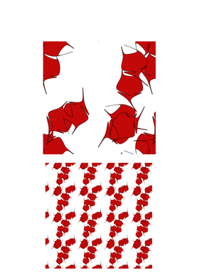
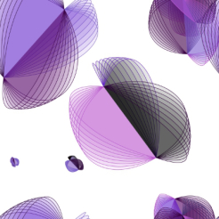
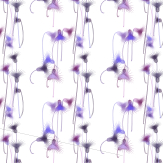
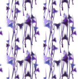
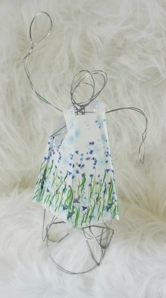
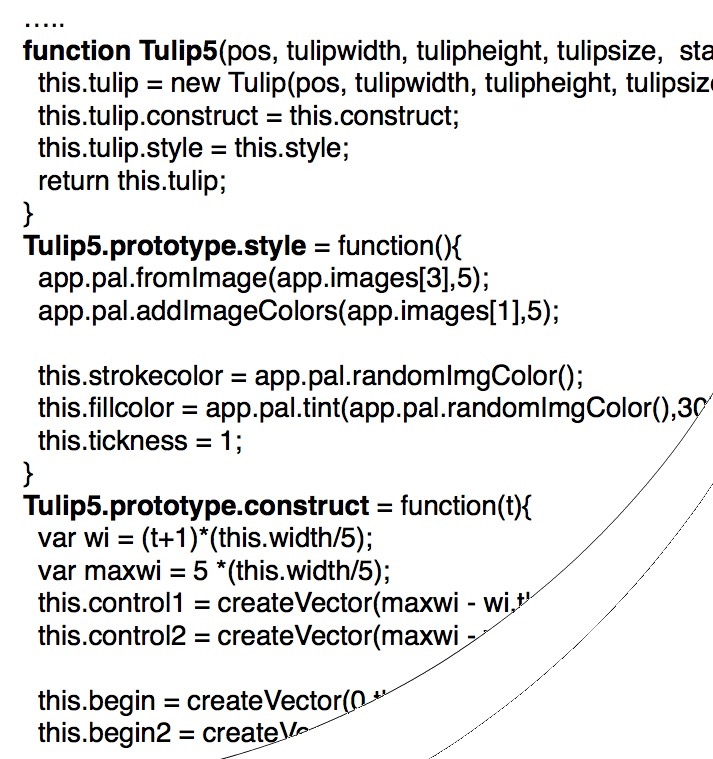

Creating a Javascript Dress
A surface pattern design for a flower dress is a challenge. In this example I create the design of the pattern in P5. I call this motif in a repeating pattern a blob. A blob is a circle - variant. If you draw a circle all the points on the circle have the same distance to the center of the circle. When I code a blob the points don't have the same distance to the center. When you change the distance on a regular basis you can get some nice flowers. These are not yet proper surface designs, because they don't repeat.
A pattern is a repeating motif. So when a detail is overlapping one of the borders, it has to be repeated on the other site of the pattern. In code I created a class to do this task.
 
But now I want a tulip. The idea is to move a second circle a little lower an pick the points on the circle at the bottom and verify the distance the points at the top.
As you can see I need a construction with three circles. Lets start coding... I coded a lot of tulips, here are some examples:


Sometimes it goes 'wrong':

And sometimes I like the results.
  
In my final pattern I collected several kind of tulips and made one big pattern.
 This design is 140 cm, the same height as the fabric. So the effect will be that the green leaves are at the bottom of my dress.
This design is 140 cm, the same height as the fabric. So the effect will be that the green leaves are at the bottom of my dress.
The javascript is made of a horizontal repeating surfacepattern designed in javascript, exported as svg, saved as a .jpg and uploaded in de online shop of passion-designs. After 4 weeks a got my design back as a fabric and sowed my own javascript dress.
|  |  |